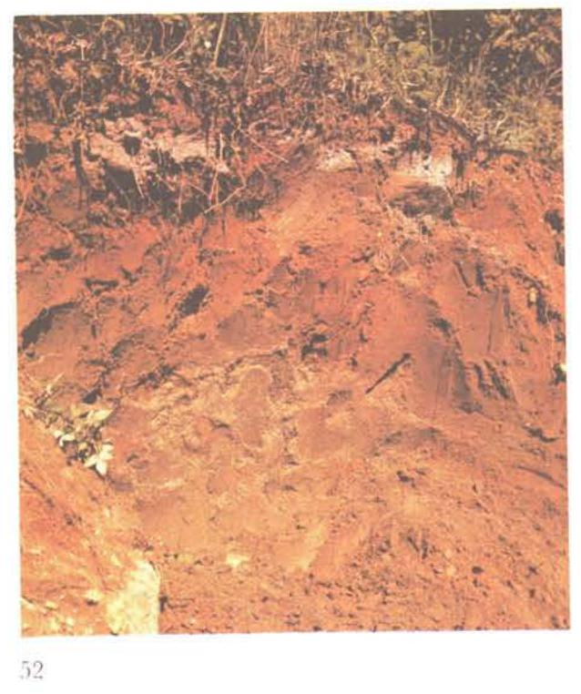
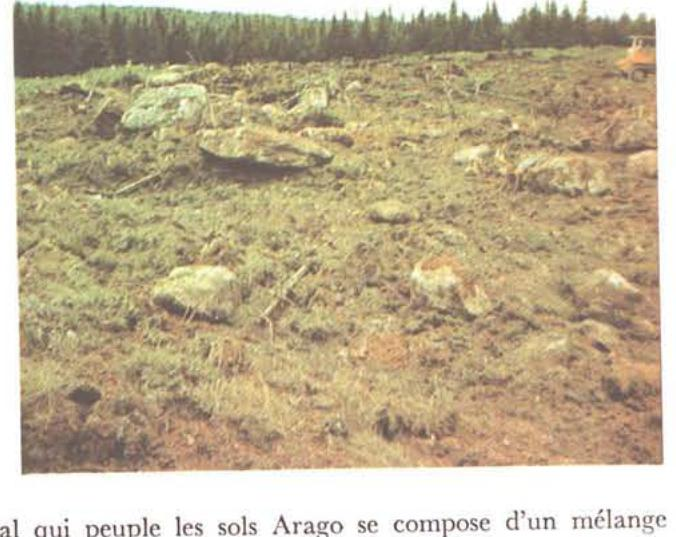

Identification & Caractéristiques Générales
La série Arago s'est développée sur un till morainique basal à texture loameuse, brun-gris à brun-jaune, issu de la désintégration de schistes ardoisiers (verts, rouges et noirs), de quartzites impurs et de grès appartenant aux formations géologiques appalachiennes. Géo-morphologiquement, ces sols occupent les sommets et les versants supérieurs des collines de l'arrière-plateau et du plateau appalachien. Le relief associé est généralement légèrement ondulé à fortement vallonné, caractérisé par des pentes régulières ou irrégulières variant le plus souvent de 6 % à 15 %, et s'inscrivant au sein de caténas pédologiques comprenant également les séries Garneau et Lafontaine.
Le profil pédologique se caractérise par un drainage naturel s'établissant de bon à modérément bon dans la partie supérieure, mais se heurtant à la présence d'un horizon fragique (fragipan) situé entre 38 et 50 centimètres de profondeur (15 à 20 pouces). Ce fragipan présente une texture loameuse, une densité apparente élevée atteignant 2,00 g/cm³, une porosité restreinte d'environ 20 %, ainsi qu'une consistance cassante à l'état sec et meuble à l'état humide. Cette couche dense et compacte entrave l'infiltration verticale de l'eau et la prospection racinaire, tout en provoquant une légère hydromorphie temporaire (marques de gley et mouchetures de rouille) à sa limite supérieure par effet de perched water table. La matrice minérale présente une pierrosité importante, qualifiée de très pierreuse à extrêmement pierreuse, constituée d'éléments grossiers anguleux d'origine locale.
Sur le plan agronomique, les potentialités de la série Arago sont fortement limitées par la déclivité des pentes, la pierrosité excessive, la compacité de l'horizon fragique et les risques d'érosion hydrique en cas de mise en culture. Les phases normales conviennent principalement aux cultures fourragères et aux pâturages, moyennant des interventions d'aménagement telles que le épierrage de surface et un contrôle rigoureux du travail du sol. En raison de sa faible profondeur effective (variant de 15 à 50 cm avant d'atteindre le fragipan) et de la présence fréquente d'une phase mince associée à des affleurements rocheux où l'épaisseur du solum ne dépasse pas 15 centimètres, une grande partie des superficies de la série Arago demeure impropre à l'agriculture et est strictement réservée à la production forestière, dominée par les conifères (sapin baumier et épinette blanche) et les peuplements mixtes.
Caractères Distinctifs & Morphologie Génétique (Comté de Dorchester — Page 60)
- Topographie : légèrement ondulée à fortement vallonnéeDrainage :bonPierrosité :très pierreux à extrêmement pierreux — 2 et 4Grand-groupe génétique :podzolDegré d'érosion :léger à modéré (W1— W2)Classes d'utilisation :(C) 4P à 7P (Q) 4c à 6Association géographique :Garneau, LafontaineVégétation naturelle :érables, sapins, bouleaux
Classification Taxonomique & Environnement Pédologique
| Ordre Pédologique | Podzolique |
|---|---|
| Grand Groupe (SCSS) | Podzol humo-ferrique |
| Sous-Groupe Taxonomique | Podzol humo-ferrique fragique |
| Famille Pédologique | Loameuse-fine, mixte sableux, acide |
| Mode de Dépôt Parental | Morainique |
| Classe de Drainage Naturel | Bien drainé |
| Régime Thermique & Humidité | Frais / Subhumide |
Description Morphologique du Profil Type
Séquences génétiques des horizons pédologiques caractérisant le profil type représentatif de la série Arago :
Profil forestier / boisé — Comté de Dorchester — Phase mince
✓ Source : Comté de Dorchester — Page 60Couleur Munsell : 5YR 3/2
Structure & Consistance : Polyédrique à granulaire
Description morphologique : Humus peu minéralisé brun-rouge foncé (5YR 3/2); sans structure; friable; pH: 3.9 — 4.2.
Couleur Munsell : 5YR 7/2
Structure & Consistance : Polyédrique à granulaire
Description morphologique : Loam pierreux à loam sablo-argileux pierreux gris-rose (5YR 7/2); sans structure; friable; pH: 3.6 — 4.0.
Couleur Munsell : 7.5YR 3/2, 5YR 3/4
Structure & Consistance : Faiblement développée
Description morphologique : Loam pierreux brun très foncé (7.5YR 3/2) à brun-rouge foncé (5YR 3/4); structure faiblement développée; friable; pH: 4.0 — 4.3.
Couleur Munsell : 10YR 5/3, 7.5YR 4/4
Structure & Consistance : Modérément développée
Description morphologique : Loam pierreux brun (10YR 5/3) à brun foncé (7.5YR 4/4); structure modérément développée; friable; pH: 4.2 — 4.5.
Couleur Munsell : 10YR 6/8, 10YR 5/6
Structure & Consistance : Faiblement développée
Description morphologique : Loam pierreux jaune-brun (10YR 6/8) à brun-jaune (10YR 5/6); structure faiblement développée; friable à légèrement ferme; pH: 4.6 — 5.0.
Couleur Munsell : 10YR 5/6, 10YR 5/2
Structure & Consistance : Lamellaire faiblement développée
Description morphologique : Loam pierreux à loam sablo-argileux pierreux brun-jaune (10YR 5/6) à brun-gris (10YR 5/2); structure lamellaire faiblement développée; ferme; pH: 4.9 — 5.2.
Profil naturel (vierge) — Comté de Kamouraska — Phase de sol
✓ Source : Comté de Kamouraska — Page 98Couleur Munsell : 5YR 2/2
Structure & Consistance : À faiblement granulaire
Description morphologique : Humus brut (mor), brun rouge foncé (5YR 2/2), sans structure à faiblement granulaire, friable, peu minéralisé; racines abondantes; pH 3.8.
Couleur Munsell : 7.5YR 6/2
Structure & Consistance : Lamellaire à granulaire faiblement développée
Description morphologique : Loam gris rosé (7.5YR 6/2; 8/2 sec), continu, friable; structure lamellaire à granulaire faiblement développée; limites nettes; varie de 3 à 3 po.; pH 4.3.
Couleur Munsell : 5YR 3/4
Structure & Consistance : Granulaire faiblement à modérément développée
Description morphologique : Loam sableux fin, brun rouge foncé (5YR 3/4), friable; structure granulaire faiblement à modérément développée; net, continu; pH 4.5.
Couleur Munsell : 7.5YR 4/4, 10YR 5/4
Structure & Consistance : Polyédrique à granulaire
Description morphologique : Loam brun à brun foncé (7.5YR 4/4 à brun jaune 10YR 5/4, sec), friable à ferme, granulaire faiblement à modérément développé; graduel, continu; quelques cailloux grossiers, anguleux; pH 4.9.
Couleur Munsell : 7.5YR 4/4, 10YR 5/4
Structure & Consistance : Polyédrique à granulaire
Description morphologique : Loam sableux très fin, brun à brun foncé (7.5YR 4/4 à 10YR 5/4, sec), friable à ferme, granulaire f. à modérément développé; net, continu; quelques cailloux; pH 5.0.
Couleur Munsell : 10YR 5/2
Structure & Consistance : Polyédrique à granulaire
Description morphologique : Loam brun à brun gris (10YR 5/2-5/3, sec), ferme en place, mais friable, lamellaire granulaire faiblement développé; quelques cailloux et racines; mouchetures brun jaune distinctes; net; pH 5.2.
Profil représentatif — Comté de Kamouraska
✓ Source : Comté de Kamouraska — Page 99Couleur Munsell : 10YR 4/3 (matrice), 10YR 6/2 (marbrures)
Structure & Consistance : Massive en place
Description morphologique : Loam brun foncé à brun (10YR 4/3 à gris brun clair 10YR 6/2, sec), ferme, mais dur et cassant (brittle) à sec; structure massive en place, mais se brise en agrégats polyédriques moyens à grossiers dont l'intérieur laisse voir des enguirds argileux et/ou limoneux gris pâle à blanc (10YR 7/2 à 8/1, sec), avec de nombreuses petites pores (porosité vésiculeuse) ayant ¼ à ½ mm. de diamètre), avec mouchetures distinctes, rares; pH 5.1. Note : enduits argileux diminuant vers la base de l'horizon. Horizon de fragipan évident dont la densité apparente atteint 2.1 2.2 et la porosité moins de 17 p. cent; conditions nettement asphyxiantes pour les racines.
Couleur Munsell : 10YR 5/3, 2.5Y 6/2, 10YR 5/6
Structure & Consistance : Massive qui se brise en gros polygones irréguliers dont les points de fracture coïncident souvent avec des lignes ou raies grises lesquelles sont bordées de raies rouillées parallèles de coloration brun jaune (10yr 5/6-5/8)
Description morphologique : Loam sableux brun à brun foncé (10YR 5/3; 6/2, sec), ou gris brun pâle (2.5Y 6/2, à sec), ferme mais devenant dur à très dur en séchant; structure massive qui se brise en gros polygones irréguliers dont les points de fracture coïncident souvent avec des lignes ou raies grises lesquelles sont bordées de raies rouillées parallèles de coloration brun jaune (10YR 5/6-5/8). Sans enduits argileux. pH 6.2-6.8.
Couleur Munsell : 10YR 4/2
Structure & Consistance : Polyédrique à granulaire
Description morphologique : Loam sableux brun gris à brun gris foncé (10YR 4/2; 6/2, sec), ferme mais friable, un peu induré à sec, beaucoup plus uniforme en couleur que l'horizon au-dessus; absence des raies grises et bordures rouillées du matériel au-dessus; sans enduits argileux ou limoneux. Pour toutes fins pratiques, horizon marquant la fin du fragipan. pH 7.3.
Profil forestier / boisé — Comté de L'islet
✓ Source : Comté de L'islet — Page 73Couleur Munsell : 5YR 2/2, 5YR 3/2
Structure & Consistance : À faiblement granulaire
Description morphologique : Humus brut (mor), brun-rouge foncé à brun foncé (5 YR 2/2 h; 7,5 YR 3/2 s); sans structure à faiblement granulaire; friable; peu minéralisé; racines abondantes; pH 3,8.
Couleur Munsell : Non précisée
Structure & Consistance : Lamellaire à granulaire faiblement développée
Description morphologique : Loam gris-rosé à blanc-rose (7,5 YR 6,2 h; 8/2 s); structure lamellaire à granulaire faiblement développée; friable; limite nette; horizon continu d'épaisseur variant de 0,6 à 8 cm; pH 4,3.
Couleur Munsell : 5YR 3/4
Structure & Consistance : Granulaire faiblement à modérément développée
Description morphologique : Loam sableux fin brun-rouge foncé à brun-rouge (5 YR 3/4 h; 4/4 s); structure granulaire faiblement à modérément développée; friable; limite nette continue; pH 4,5.
Couleur Munsell : 5YR 4/4, 10YR 5/4
Structure & Consistance : Granulaire faiblement à modérément développée
Description morphologique : Loam brun foncé (7,5 YR 4/4 h) à brun-jaune (10 YR 5/4 s); structure granulaire faiblement à modérément développée; friable à ferme; quelques cailloux grossiers, anguleux; limite graduelle continue; pH 4,9.
Couleur Munsell : 5YR 4/4, 10YR 5/4
Structure & Consistance : Granulaire faiblement à modérément développée
Description morphologique : Loam sableux très fin, brun foncé (7,5 YR 4/4 h), jaune-brun (10 YR 5/4 s); structure granulaire faiblement à modérément développée; friable à ferme; quelques cailloux; limite nette continue; pH 5,0.
Couleur Munsell : 10YR 5/2
Structure & Consistance : Lamellaire à granulaire faiblement développée
Description morphologique : Loam brun-gris à brun (10 YR 5/2 h; 5/3 s); structure lamellaire à granulaire faiblement développée; ferme en place mais friable lorsque déplacé; mouchetures brun-jaune rares, distinctes; quelques cailloux et racines; limite nette; pH 5,2.
Couleur Munsell : 10YR 4/3 (matrice), 10YR 6/2 (marbrures)
Structure & Consistance : Massive en place
Description morphologique : Loam brun foncé (10 YR 4/3 h) à gris-brun clair (10 YR 6/2 s); ferme à l'état humide, mais dur et cassant (brittle) à sec; structure massive en place, mais se brisant en agrégats polyédriques moyens à grossiers, dont l'intérieur laisse voir des enduits argileux et/ou limoneux gris clair à blancs (10 YR 7/2; 8/1 s), avec de nombreux petits pores vésiculaires, de 1/4 à 1/2 mm de diamètre, mouchetures distinctes, rares; pH 5,1.
Couleur Munsell : 10YR 5/3, 10YR 5/6
Structure & Consistance : Polyédrique à granulaire
Description morphologique : Loam sableux brun à gris-brun clair (10 YR 5/3; 6/2 s); ferme mais massif se brisant en gros polygones irréguliers dont les points de fracture coïncident souvent avec des lignes ou raies grises, lesquelles sont bordées de raies rouillées parallèles, de coloration brun-jaune (10 YR 5/6; 5/8). Absence d'enduits argileux; pH 6,2.
Couleur Munsell : 10YR 4/2
Structure & Consistance : Polyédrique à granulaire
Description morphologique : Loam sableux brun-gris à brun-gris foncé (10 YR 4/2; 6/2 s); ferme mais friable, un peu induré à sec; beaucoup plus uniforme en couleur que l'horizon ci-dessus; absence de raies grises et de bordures rouillées comme dans l'horizon ci-dessus; pH 7,3.
Profil forestier / boisé — Comté de Bellechasse — Phase mince
✓ Source : Comté de Bellechasse — Page 52Couleur Munsell : 5YR 3/4
Structure & Consistance : Polyédrique à granulaire
Description morphologique : Humus brut, brun rouge foncé (5YR 3/4); racines abondantes; pH 4.0.
Couleur Munsell : 7.5YR 7/2
Structure & Consistance : Plutôt lamellaire
Description morphologique : Loam gris rose (7.5YR 7/2); structure plutôt lamellaire; limites irrégulières; friable et perméable; pH 4.3.
Couleur Munsell : 5YR 3/4
Structure & Consistance : Granulaire modérément développée
Description morphologique : Loam sableux, brun rouge foncé (5YR 3/4); structure granulaire modérément développée; quelques cailloux; friable et perméable; pH 4.5.
Couleur Munsell : 7.5YR 4/4
Structure & Consistance : Granulaire peu développée
Description morphologique : Loam sableux, brun foncé (7.5YR 4/4); structure granulaire peu développée; quelques pierres; friable et perméable; pH 5.0.
Couleur Munsell : 10YR 5/3, 10YR 5/6
Structure & Consistance : Lamellaire peu développée
Description morphologique : Loam brun (10YR 5/3) avec taches brun jaune (10YR 5/6); structure lamellaire peu développée; quelques pierres; friable et perméable; pH 5.2.
Couleur Munsell : 10YR 4/3
Structure & Consistance : Massive
Description morphologique : Loam pierreux, brun foncé (10YR 4/3); structure massive; fragipan s'effritant en agrégats grossièrement polyédriques; enduits limono-argileux; imperméable; pH 5.1.
Profils Photographiques & Planches de Terrain
Documents iconographiques, figures pédologiques et coupes de terrain documentées dans les mémoires d'inventaire pour de la série Arago :



Propriétés Physico-Chimiques & Analyses de Laboratoire
| Col 1 | Col 2 | Col 3 | Col 4 | Col 5 | Col 6 | Col 7 | Col 8 | Col 9 | Col 10 | Col 11 |
|---|---|---|---|---|---|---|---|---|---|---|
| L-H | 4-0/10-0 | — | — | — | 3.9 | 38.65 | 1.37 | 12.63 | 124.63 | 10.13 |
| Ae | 0-3/0-7 | 54.2 | 26.0 | 19.8 | 3.6 | 1.06 | 0.13 | 1.12 | 9.12 | 12.28 |
| Bfh | 3-5/7-12 | 37.2 | 34.0 | 28.8 | 4.0 | 1.09 | 0.29 | 0.94 | 36.94 | 2.54 |
| Bf1 | 5-8/12-20 | 43.2 | 34.0 | 22.8 | 4.2 | 5.60 | 0.24 | 0.74 | 28.74 | 2.57 |
| Bf2 | 8-13/20-33 | 43.2 | 32.0 | 24.8 | 4.6 | 2.70 | 0.13 | 0.69 | 10.69 | 6.45 |
| C | 17+/43+ | 49.2 | 26.0 | 24.8 | 4.9 | 0.53 | 0.05 | 0.80 | 2.80 | 28.57 |
Particularités Régionales, Phases & Variantes Pédologiques
Déclinaisons régionales, faciès texturaux, phases d'érosion ou de pierrosité et variantes cartographiées par étude pour de la série Arago :
| Étude Régionale | Symbole | Appellation / Phase / Variante | Différenciation avec la série type (Analyse pédologique) |
|---|---|---|---|
| Comté de Bellechasse | Ao |
Arago loam pierreux | Modalité modale de référence (type de base de la série). |
Ao-m |
Arago loam pierreux mince | Phase pierreuse; Phase mince sur substrat rocheux (< 50 cm). | |
| Comté de Dorchester | Ao |
Arago loam pierreux | Phase pierreuse. |
Ao-m |
Arago loam pierreux mince | Phase pierreuse; Phase mince sur substrat rocheux (< 50 cm). | |
| Comté de Kamouraska | Ao |
Arago loam pierreux | Phase pierreuse. |
Ao-m |
Arago loam pierreux phase mince | Phase pierreuse; Phase mince sur substrat rocheux (< 50 cm). | |
| Comté de L'islet | Ao |
Arago loam pierreux | Phase pierreuse. |
Ao-m |
Arago loam pierreux mince | Phase pierreuse; Phase mince sur substrat rocheux (< 50 cm). |
Distribution Pédo-Paysagère & Représentativité Cartographique (Couverture PPS 2026)
- Garneau loam pierreux (GRU) — co-occurrente dans 663 polygone(s)
- Affleurements rocheux (ARR) — co-occurrente dans 103 polygone(s)
- Lafontaine loam pierreux (LFO) — co-occurrente dans 79 polygone(s)
Aptitudes Agronomiques, Hydropédologie & Conservation des Sols
Indicateurs Hydropédologiques & Vulnérabilité à l'Érosion (BDHP 2026)
Interprétation BDHP : Potentiel de ruissellement modérément élevé. Faible taux d'infiltration, présence d'horizons ralentissant le drainage descendant.
Classement selon l'Inventaire des Terres du Canada (ITC / CLI) : Classe 1.
- Potentiel agricole : Terroir adapté aux cultures régionales selon la texture dominante et la régie de drainage.
- Contraintes majeures : Bien drainé. Risque d'engorgement temporaire ou d'excès d'eau printanier.
- Gestion & Aménagement : Drainage souterrain ou superficiel préconisé sur les terres planes. Chaulage et apport organique régulier selon les bilans agronomiques.
- Cultures adaptées : Grandes cultures (maïs, soya, céréales), prairies fourragères et cultures maraîchères selon le contexte géomorphologique.